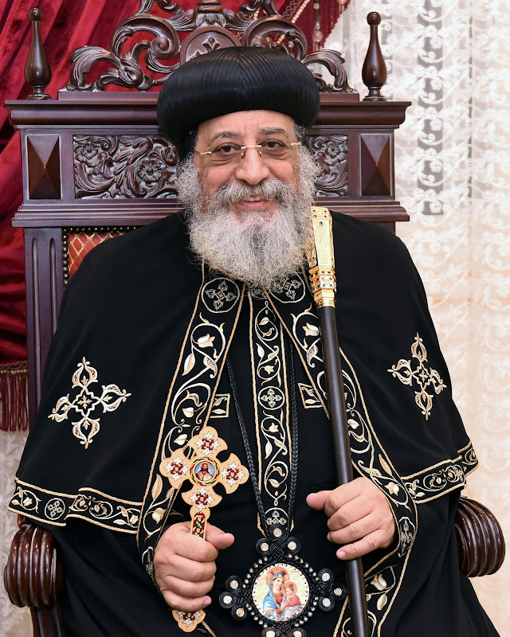

Our Pope
His Holiness Pope Tawadros II
Pope of Alexandria and Patriarch of the See of St. Mark
Your people shall be willing in the day of your power, in the beauties of holiness from the womb of the morning: you have the dew of your youth. The LORD has sworn, and will not relent, You are a priest for ever after the order of Melchizedek.
Psalm 110:3

Patriarch of the See of St. Mark
A Shepherd for the Coptic Orthodox Church
His Holiness Pope Tawadros II serves as the 118th Pope of Alexandria and Patriarch of the See of St. Mark, shepherding the Coptic Orthodox Church with pastoral care, teaching, and service.
Life & Service
Explore His Life
01 Biography
The name “Tawadros” means “a gift from God” in the Coptic language. His Holiness was born as Wagih Sobhi Baqi Suleiman on November 4, 1952, in Mansoura, Egypt, and grew up in a religious home. Many of his family members were priests and clergy. His father was an engineer, his mother was a housewife, and he has two younger sisters.
02 His Work Before Becoming a Monk
He worked in a pharmaceutical company in the Ministry of Health until he became the manager. When he resigned, he had worked there for 10 years, 10 months, and 10 days.
03 His Studies
- He received a bachelor’s degree in pharmacy from Alexandria University.
- He received a scholarship for industrial pharmacy from Alexandria University.
- He received a bachelor’s degree in theology from the Clerical College in Alexandria.
- He was granted a fellowship with the World Health Organization by the British International Health Institute.
- He studied business administration in Singapore.
- He received an Honorary Doctorate from Beni Suef University for supporting social peace.
- He has given several lectures at universities around the world, including in the USA, Sweden, and Canada.
04 His Church Life
- He joined the monastic life in the Monastery of Saint Pishoy in Wadi El Natrun.
- He became a monk with the name Theodore Ava Pishoy.
- He began his service as an ordained priest in the Diocese of Beheira, Matruh, and other cities.
- He was appointed general bishop for serving the youth and assisting His Eminence Metropolitan Pachomius, Metropolitan of Beheira.
- He was also responsible for the children’s issues committee in the Holy Synod.
- On his 60th birthday, he was chosen to be the 118th Patriarch.
- H.H. Pope Tawadros II was enthroned in a grand traditional ceremony where he received the papal staff, the cross from the holy altar, and the leadership of priesthood.
05 Learn More
To learn more about His Holiness, please visit the official Coptic Orthodox Church biography page.
Gallery
His Holiness Pope Tawadros II
Learn More
Official Biography
Read more about His Holiness Pope Tawadros II through the official website of the Coptic Orthodox Church.